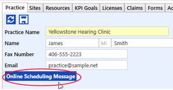
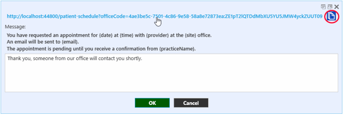
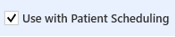
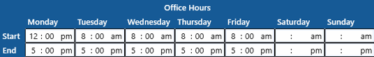
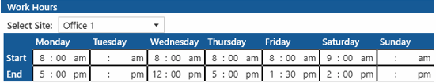

Online Scheduling Setup
Initial setup for Online Patient Scheduling will be done by TIMS Support. Contact them at 800-763-0308 or audiologysupport@cu.net to schedule an installation.
- TIMS Support will first configure your database in the following way. Until this is done, some of the options below in steps 2 - 4 will not be available.
- Add a new Appointment Type named "Online". This will be the default type assigned to any online appointment requests. It will be a protected item, and once added cannot be edited or deleted.
- Add a new patient named "Online Request". This will be the default patient assigned to any online appointment requests. Once added, the patient cannot be edited or deleted.
- Configure the patient scheduler to use this new patient ID as the default.
- Generate a unique URL (web address) to be used to display a link on the practice website, or used in emails and texts.
- Practice Setup
- Click the Online Scheduling Message button to add any additional text you would like to include on the confirmation message patients receive after they submit their request. This message will appear both on the screen, and in an email sent to the address entered. The bold text at the top is automatic. The box below can be left blank if the bold text is sufficient, or any other additional message can be entered.


 The URL link displayed at the top is the web address that will be used by patients to access the online scheduler. Click the link to open the default browser and go to the scheduler website. Click the copy button
The URL link displayed at the top is the web address that will be used by patients to access the online scheduler. Click the link to open the default browser and go to the scheduler website. Click the copy button  to copy the address to the clipboard. It can be used elsewhere to create an hyperlink or QR Code on your practice website or other communications.
to copy the address to the clipboard. It can be used elsewhere to create an hyperlink or QR Code on your practice website or other communications. - Site Setup
- For each site that will be available to schedule online, check the Use with Patient Scheduling box.

- Make sure Office Hours are up to date for each site that will be available to schedule online.

- Provider Setup
- For each provider that will be available to schedule online, check the Use with Patient Scheduling box.
- Make sure the linked user’s Work Hours at each site are up to date in User Preferences.

Once this setup is complete, you can start using the web address above for patients to access the online scheduler and request appointments.